URL: https://animal-welfare-platform-vepq.vercel.app
Fecha: 27 oct, 2026 (America/Bogota)
Resultado global: 7/7 suites · 17/17 E2E · 0 fallos de producto
| Tipo | Curso | Usado aquí | Resultado |
|---|---|---|---|
| Unitarias | JUnit / pytest | node:test + pytest oráculo ICA | 11/11 · 20/20 |
| Funcionales / E2E | Selenium / Playwright / Cypress | Playwright vs Vercel | 17/17 |
| API | Postman | pytest/requests + colección | 10/10 |
| Rendimiento | Apache JMeter | 20 hilos × 3 hits | 2/2 |
| Aceptación | Cucumber | Gherkin + pytest | 3/3 |
| Seguridad | OWASP ZAP | TLS, HSTS, RLS, cabeceras, bundle | 6/6 |
| Calidad | SonarQube | MI / complejidad | Rating A · MI 95,6 |
| Gestión / CI | TestRail · GitHub Actions | 41 casos · ci.yml | Configurado |
| ID | Escenario | Resultado | Evidencia |
|---|---|---|---|
| EP-01 | Login administrador | Satisfactorio | 01 / 03 |
| EP-02 | Login inválido | Satisfactorio | 02 |
| EP-03 | Registro sin rol admin | Satisfactorio | 07 |
| EP-04 | Tablero y alertas (IBA 81,4) | Satisfactorio | 03 / 16 |
| EP-05 | Listar predios (3) | Satisfactorio | 08 / 18 |
| EP-06 | Formulario de predio | Satisfactorio | 12 |
| EP-07 | Inventario animal (6) | Satisfactorio | 09 |
| EP-08 | Detalle e IBA (VACA-087) | Satisfactorio | 21 |
| EP-09 | Evaluación ICA | Satisfactorio | 22 |
| EP-10 | Simulación SED | Satisfactorio | 10 / 23 |
| EP-11 | Reporte de predio | Satisfactorio | 14 |
| EP-12 | CRUD usuarios (4) | Satisfactorio | 15 |
| EP-13 | adminGuard /app/users | Satisfactorio | 15 |
| EP-14 | Cerrar sesión | Satisfactorio | 06 / 04 |
| ID | Sev. | Resumen | Estado |
|---|---|---|---|
| DEF-01 | Alta | Logout restauraba JWT | Cerrado en producción |
| DEF-02 | Baja | ion-select OK/Cancel | Cerrado (Aceptar/Cancelar) |
| DEF-03 | Media | Cabeceras de seguridad / CSP | Cerrado (CSP + Permissions-Policy) |
| DEF-04 | Baja | Bucket de fotos público | Cerrado (privado + URLs firmadas) |
| DEF-05 | Baja | Credenciales demo en login | Cerrado (sin hint ni prellenado) |
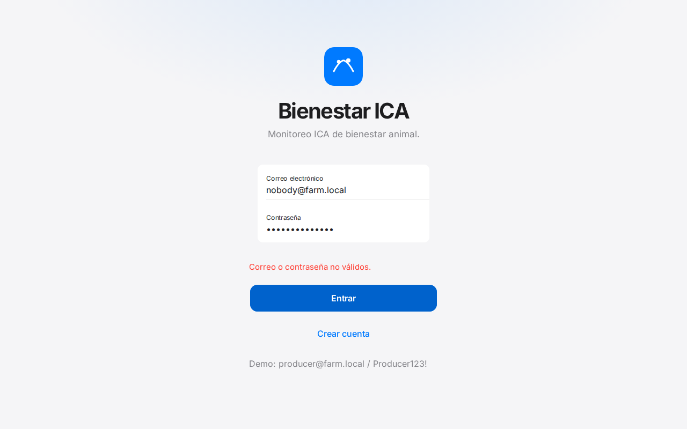
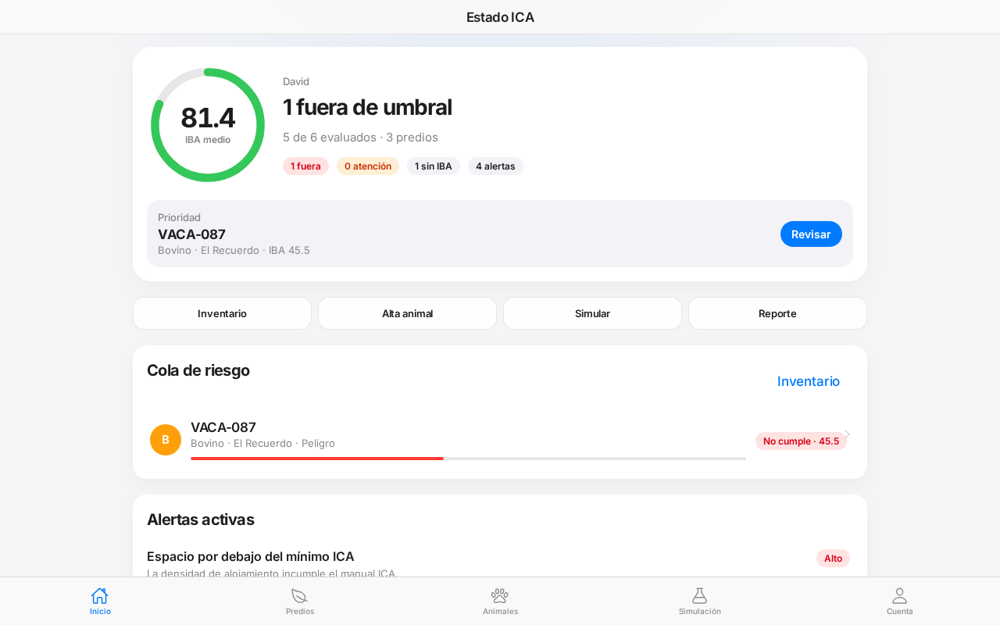

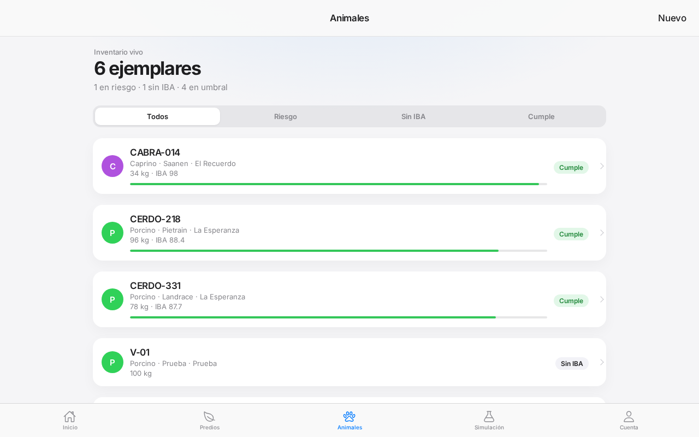
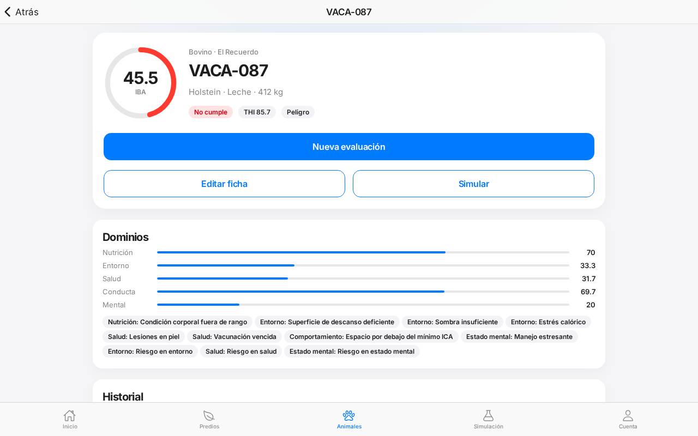
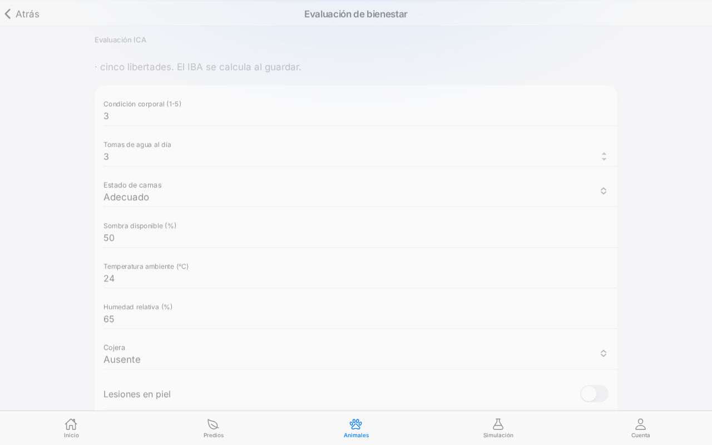
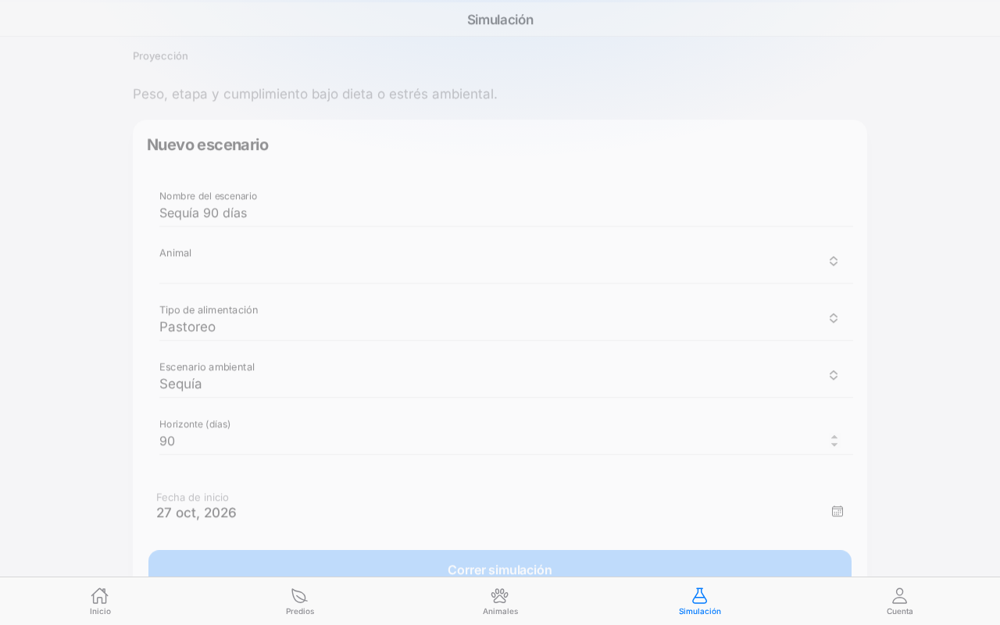
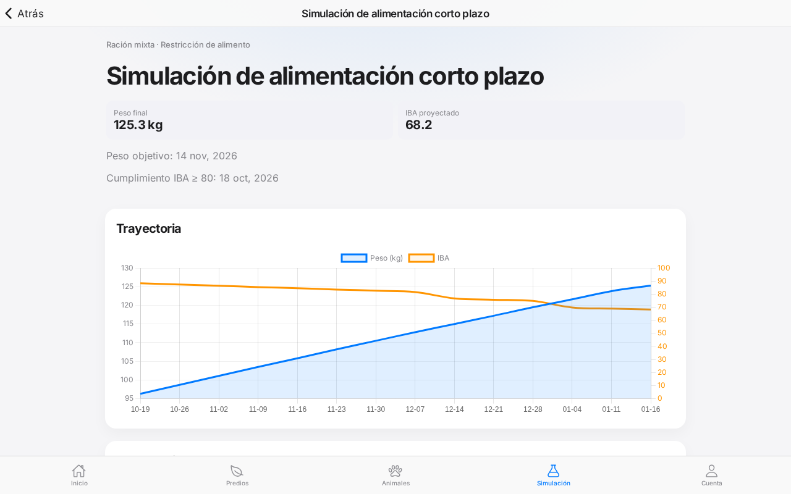
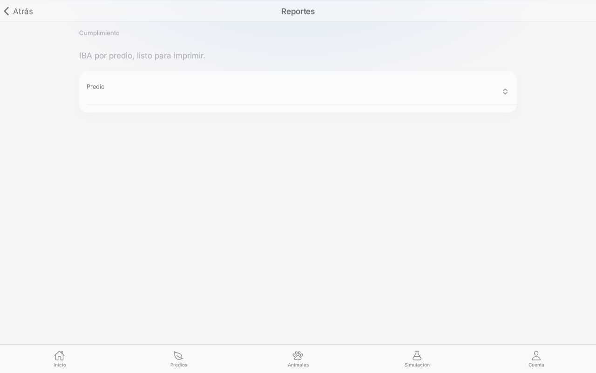
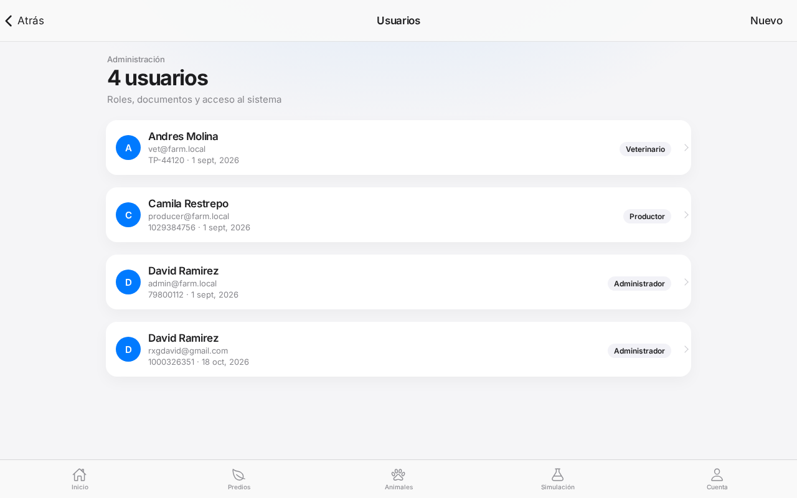
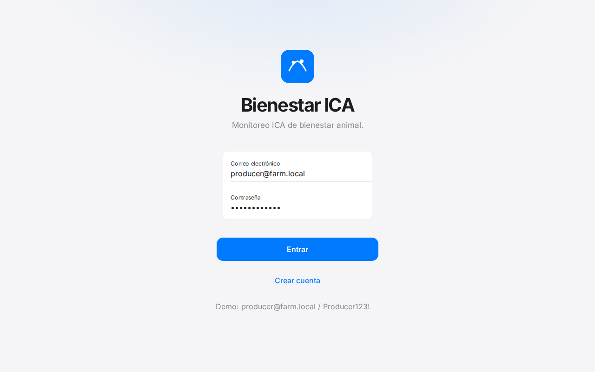
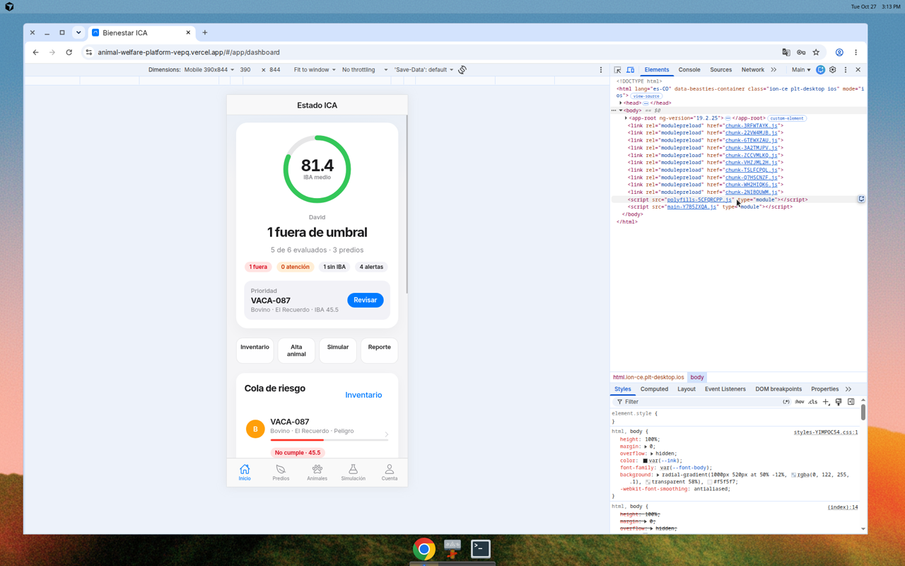
E2E_EMAIL=… E2E_PASSWORD=… E2E_BASE_URL=https://animal-welfare-platform-vepq.vercel.app python3 tests/run_suite.py
Documentos Word: docs/Capitulos_12_a_16_Pruebas_resultados_APA.docx y docs/Informe_pruebas_software_Bienestar_ICA.docx.